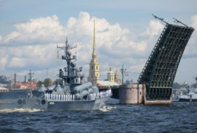

Новости
-
 День Военно-морского флота 2021
День Военно-Морского Флота РФ отмечается в последнее воскресенье июля и в 2021 году приходится на 25 число. Цель праздника – демонстрация военной мощи российских войск на воде.
-
День работников торговли 2021
В России День работников торговли отмечается в четвертую субботу июля и приходится на 24 июля. Этот праздник отмечают специалисты сферы торговли и обслуживания.
-
Международный день шахмат 2021
Международный день шахмат – всемирный праздник шахматистов. Его отмечают 20 июля профессиональные игроки-спортсмены и любители этой игры.
-
День металлурга 2021
В России День металлурга отмечается в третье воскресенье июля. В 2021 году праздник выпадает на 18 июля. Цель праздника – почтить труд металлургов и показать важность металлургической отрасли в экономике страны.
-
День российской почты 2021
День российской почты – профессиональный праздник работников почтовой связи, отмечается 11 июля. В торжествах принимают участие все сотрудники структуры, вне зависимости от должности и стажа.
-
День ГАИ 2021
День ГАИ (ГИББД МВД РФ) отмечается 3 июля. Это профессиональный праздник работников государственной инспекции безопасности дорожного движения.
-
День спортивного журналиста 2021
День спортивного журналиста (2 июля) – это праздник тех, кто освещает мероприятия спортивного мира: журналисты, комментаторы, репортеры, блогеры, радио- и телеведущие. Также праздник отмечают болельщики.
-
День молодежи 2021
В России День молодежи в 2021 году отмечается 27 июня. Цель праздника – привлечь внимание общественности к проблемам современной молодежи.
-
Всемирный день рыболовства 2021
В России в 2021 году Всемирный день рыболовства отмечается ежегодно 27 июня.